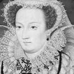

Hüküm sürdüğü dönemde yaşanan dini baskılar nedeniyle “Kanlı Mary” olarak adlandırılan 1. Mary (1516-1558), İngiltere tahtına oturan ilk kadındır. Babası 8. Henry’nin (1491-1547) yasakladığı Katolikliği yeniden yaygınlaştırmaya çalışmıştır. Bu kararından hoşnut olmayan yüzlerce insanın kazığa bağlanılıp yakılması emrini vermiştir.
Mary’nin çabaları başarısız olmuş ve Katolik inancına karşı daha büyük bir muhalefetin gelişmesine neden olmuştur. Mary’nin ölümünün ardından tahta çıkan üvey kardeşi Kraliçe 1. Elizabeth (1533-1603), Protestanlığı ülkenin resmi dini ilan ederek 16. yy’ın din savaşlarına son vermiştir.

Henry ve Aragonlu Catherine’in (1485-1536) tek çocukları olan Mary’nin, cinsiyeti nedeniyle taht için uygun bir isim olmadığı düşünülüyordu. Bir erkek evlat sahibi olmak isteyen Henry, 1533 yılında Catherine’den ayrılarak yeniden evlendi. Bu, yapacağı beş evlilikten sadece ilkiydi. Mary’i varisliğinden çıkarması ve boşanmış olması, Henry’nin Katolik Kilisesi ile arasının açılmasına neden oldu. Yine de sonunda bir erkek evlat sahibi olabildi. Üçüncü karısından olan bu çocuk daha sonra tahta çıkan Kral 6. Edward’tı (1537-1553).
Edward dokuz yaşında tahta geçince babasının izlediği dini politikaları devam ettirdi. Altı yıl sonra ölümü ise Mary’nin önünü açmış oldu. Edward’ın resmi halefi olan on beş yaşındaki Protestan Lady Jane Grey (1537-1554) sadece dokuz gün tahtta kalabilmişti. Halk onu tahtta istemiyordu. Otuz yedi yaşındaki Mary tahta geçti ve Jane’in başını kestirdi.
Tahta geçmesinin ardından Katolik bir İspanyol prensi olan 2. Philip’le (1527-1598) yaptığı evlilik çok sayıda düşman kazanmasına neden oldu (1554). Çok geçmeden Sir Thomas Wyatt (1521-1554) ona karşı bir isyan başlattı. Mary, aynı yıl “sapkınlık yasalarını” yeniden yürürlüğe koydu. Protestanlar’a karşı geniş kapsamlı bir baskı dalgası başlattı. 16. yy İngilteresi’nin dini karmaşa ortamında şüphesiz ki Mary’nin uygulamaları alışılmadık değildi. Babası, Protestanlığı yaymak için Mary’nin onu yasaklamak için öldürdüğünden çok daha fazla insan öldürmüştü. Ne var ki bu infazlarda kullanılan dehşet verici yöntemler Mary’nin karanlık ününü daha fazla arttırdı.
Katolik bir varis dünyaya getiremeyen Mary, kırk iki yaşında öldü. Tahtı, Protestan olan Elizabeth’e bıraktı.
Ek Bilgiler
1- Mary’nin hükümdarlığı sırasında kocası 2. Philip, İspanya kralı oldu. Philip 1588 yılında İspanyol deniz kuvvetlerini İngiltere’ye göndererek ülkenin yönetimini üvey baldızı 1. Elizabeth’in elinden almak istedi. Ne var ki bu çabasında başarısız oldu.
2- Mary’nin döneminde İngiltere, Fransa sahilindeki Calais’in kontrolünü kaybetti. Böylece İngiltere’nin Fransa’daki son toprağı da elden çıkmış oldu.
3- Kanlı Mary kokteyli votka, domates suyu ve baharatla yapılır. Kanlı Mary, aynı zamanda DC Comics’te yer alan kötü bir süper kahramanın adıdır.